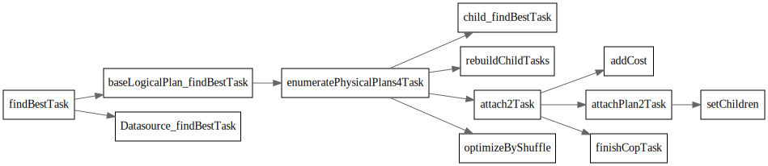
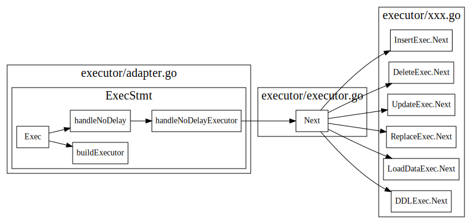

TiDB Server Main Loop
跟着官方的tidb源码阅读博客，看了TiDB main函数，大致了解了一个SQL的处理过程
conn session
下图显示了TiDB中Accept一个mysql连接的处理流程，对于每个新的conn, TiDB会启动一个goroutine来处理这个conn, 并按照Mysql协议，处理不同的mysql cmd。 每个conn在server端会有个对应的session.
对于Query语句，会session.Execute生成一个执行器，返回一个resultSet, 最后调用writeResultset, 从ResultSet.Next中获取结果，然后将结果返回给客户端。

一个sql语句执行过程中经过以下几个过程:
ParseSQL将SQL语句解析为stmt ast treeCompile将stmt ast tree 转换为physical planBuildExecutor创建executorresultSet.Next驱动executor执行

ParseSQL
StmtNodes
StmtNode 接口定义
// Node is the basic element of the AST.
// Interfaces embed Node should have 'Node' name suffix.
type Node interface {
// Restore returns the sql text from ast tree
Restore(ctx *format.RestoreCtx) error
// Accept accepts Visitor to visit itself.
// The returned node should replace original node.
// ok returns false to stop visiting.
//
// Implementation of this method should first call visitor.Enter,
// assign the returned node to its method receiver, if skipChildren returns true,
// children should be skipped. Otherwise, call its children in particular order that
// later elements depends on former elements. Finally, return visitor.Leave.
Accept(v Visitor) (node Node, ok bool)
// Text returns the original text of the element.
Text() string
// SetText sets original text to the Node.
SetText(text string)
}
// StmtNode represents statement node.
// Name of implementations should have 'Stmt' suffix.
type StmtNode interface {
Node
statement()
}
stmtNode实现种类和继承关系

Compile
Compile中首先使用planbuilder，将stmt ast 树转换为logical plan,
然后logicalOptimize做基于规则的逻辑优化，physicalOptimize会根据
cost选择最佳的physical plan. 最后postOptimize还会做一波优化。

logical plan optimize
逻辑优化(Rule-based-Optimization, 简称RBO)，主要依据关系代数的等价交换规则做一些逻辑变换。
var optRuleList = []logicalOptRule{
&gcSubstituter{},
&columnPruner{},
&buildKeySolver{},
&decorrelateSolver{},
&aggregationEliminator{},
&projectionEliminator{},
&maxMinEliminator{},
&ppdSolver{},
&outerJoinEliminator{},
&partitionProcessor{},
&aggregationPushDownSolver{},
&pushDownTopNOptimizer{},
&joinReOrderSolver{},
&columnPruner{}, // column pruning again at last, note it will mess up the results of buildKeySolver
}
Physical Optimization
物理优化，主要通过对查询的数据读取、表连接方式、表连接顺序、排序等技术进行优化。 基于代价的优化（CBO), 依赖于统计信息的准确性与及时性，执行计划会及时的根据数据变换做对应的调整
主要实现在函数findBestTask中，每个logical plan都实现了这个findBestTask接口, 具体实现在planner/core/find_best_task.go中
其中baseLogicalPlan.findBestTask 为封装的基类函数
在attach2Task中会更新task的cost
findBestTask

// findBestTask converts the logical plan to the physical plan. It's a new interface.
// It is called recursively from the parent to the children to create the result physical plan.
// Some logical plans will convert the children to the physical plans in different ways, and return the one
// With the lowest cost and how many plans are found in this function.
// planCounter is a counter for planner to force a plan.
// If planCounter > 0, the clock_th plan generated in this function will be returned.
// If planCounter = 0, the plan generated in this function will not be considered.
// If planCounter = -1, then we will not force plan.
findBestTask(prop *property.PhysicalProperty, planCounter *PlanCounterTp) (task, int64, error)
// attach2Task makes the current physical plan as the father of task's physicalPlan and updates the cost of
// current task. If the child's task is cop task, some operator may close this task and return a new rootTask.
attach2Task(...task) task
findBestTask最后的输出为task, 可以使用explain查看最后生成的task
>create table t (id varchar(31), name varchar(50), age int, key id_idx(id));
>explain select name, age from t where age > 18;
+-----------------------+---------+-----------+---------------+--------------------------------+
| id | estRows | task | access object | operator info |
+-----------------------+---------+-----------+---------------+--------------------------------+
| Projection_4 | 0.00 | root | | tests.t.name, tests.t.age |
| └─TableReader_7 | 0.00 | root | | data:Selection_6 |
| └─Selection_6 | 0.00 | cop[tikv] | | eq(tests.t.id, "pingcap") |
| └─TableFullScan_5 | 1.00 | cop[tikv] | table:t | keep order:false, stats:pseudo |
+-----------------------+---------+-----------+---------------+--------------------------------+
task
cop task 是指被下推到 KV 端分布式执行的计算任务，root task 是指在 TiDB 端单点执行的计算任务。
type task interface {
count() float64
addCost(cost float64)
cost() float64
copy() task
plan() PhysicalPlan
invalid() bool
}
rootTask
// rootTask is the final sink node of a plan graph. It should be a single goroutine on tidb.
type rootTask struct {
p PhysicalPlan
cst float64
}
copTask
// copTask is a task that runs in a distributed kv store.
// TODO: In future, we should split copTask to indexTask and tableTask.
type copTask struct {
indexPlan PhysicalPlan
tablePlan PhysicalPlan
cst float64
// indexPlanFinished means we have finished index plan.
indexPlanFinished bool
// keepOrder indicates if the plan scans data by order.
keepOrder bool
// doubleReadNeedProj means an extra prune is needed because
// in double read case, it may output one more column for handle(row id).
doubleReadNeedProj bool
extraHandleCol *expression.Column
commonHandleCols []*expression.Column
// tblColHists stores the original stats of DataSource, it is used to get
// average row width when computing network cost.
tblColHists *statistics.HistColl
// tblCols stores the original columns of DataSource before being pruned, it
// is used to compute average row width when computing scan cost.
tblCols []*expression.Column
idxMergePartPlans []PhysicalPlan
// rootTaskConds stores select conditions containing virtual columns.
// These conditions can't push to TiKV, so we have to add a selection for rootTask
rootTaskConds []expression.Expression
// For table partition.
partitionInfo PartitionInfo
}
ExecStmt
Compile后最后返回的数据结构为ExecStmt, 接下来会使用buildExecutor把ExecSmt
转变为executor.
// ExecStmt implements the sqlexec.Statement interface, it builds a planner.Plan to an sqlexec.Statement.
type ExecStmt struct {
// GoCtx stores parent go context.Context for a stmt.
GoCtx context.Context
// InfoSchema stores a reference to the schema information.
InfoSchema infoschema.InfoSchema
// Plan stores a reference to the final physical plan.
Plan plannercore.Plan
// Text represents the origin query text.
Text string
StmtNode ast.StmtNode
Ctx sessionctx.Context
// LowerPriority represents whether to lower the execution priority of a query.
LowerPriority bool
isPreparedStmt bool
isSelectForUpdate bool
retryCount uint
retryStartTime time.Time
// OutputNames will be set if using cached plan
OutputNames []*types.FieldName
PsStmt *plannercore.CachedPrepareStmt
}
Executor
根据physical plan生成相应的executor, Executor interface如下, 使用了Volcano模型，接口用起来和迭代器差不多，采用Open-Next-Close套路来使用。
Open: 做一些初始化工作Next: 执行具体操作Close: 做一些清理操作
// Executor is the physical implementation of a algebra operator.
//
// In TiDB, all algebra operators are implemented as iterators, i.e., they
// support a simple Open-Next-Close protocol. See this paper for more details:
//
// "Volcano-An Extensible and Parallel Query Evaluation System"
//
// Different from Volcano's execution model, a "Next" function call in TiDB will
// return a batch of rows, other than a single row in Volcano.
// NOTE: Executors must call "chk.Reset()" before appending their results to it.
type Executor interface {
base() *baseExecutor
Open(context.Context) error
Next(ctx context.Context, req *chunk.Chunk) error
Close() error
Schema() *expression.Schema
}

RecordSet
executor的next方法，将由recordset的next来驱动不断地执行。
下图摘自2 executor本身

handleNoDelay
Insert 这种不需要返回数据的语句，只需要把语句执行完成即可。这类语句也是通过 Next 驱动执行，驱动点在构造 recordSet 结构之前

RecordSet driver

// RecordSet is an abstract result set interface to help get data from Plan.
type RecordSet interface {
// Fields gets result fields.
Fields() []*ast.ResultField
// Next reads records into chunk.
Next(ctx context.Context, req *chunk.Chunk) error
// NewChunk create a chunk.
NewChunk() *chunk.Chunk
// Close closes the underlying iterator, call Next after Close will
// restart the iteration.
Close() error
}
RecordSet Next方法接口的实现.
// Next use uses recordSet's executor to get next available chunk for later usage.
// If chunk does not contain any rows, then we update last query found rows in session variable as current found rows.
// The reason we need update is that chunk with 0 rows indicating we already finished current query, we need prepare for
// next query.
// If stmt is not nil and chunk with some rows inside, we simply update last query found rows by the number of row in chunk.
func (a *recordSet) Next(ctx context.Context, req *chunk.Chunk) error {
err := Next(ctx, a.executor, req)
if err != nil {
a.lastErr = err
return err
}
numRows := req.NumRows()
if numRows == 0 {
if a.stmt != nil {
a.stmt.Ctx.GetSessionVars().LastFoundRows = a.stmt.Ctx.GetSessionVars().StmtCtx.FoundRows()
}
return nil
}
if a.stmt != nil {
a.stmt.Ctx.GetSessionVars().StmtCtx.AddFoundRows(uint64(numRows))
}
return nil
}
在writeResult时候不断调用RecordSet的Next方法，去驱动调用executor的Next;
// writeChunks writes data from a Chunk, which filled data by a ResultSet, into a connection.
// binary specifies the way to dump data. It throws any error while dumping data.
// serverStatus, a flag bit represents server information
func (cc *clientConn) writeChunks(ctx context.Context, rs ResultSet, binary bool, serverStatus uint16) error {
data := cc.alloc.AllocWithLen(4, 1024)
req := rs.NewChunk()
//...
for {
// Here server.tidbResultSet implements Next method.
err := rs.Next(ctx, req)
/...
rowCount := req.NumRows()
//...
for i := 0; i < rowCount; i++ {
data = data[0:4]
/...
if err = cc.writePacket(data); err != nil {
return err
}
//...
}
}
return cc.writeEOF(serverStatus)
}